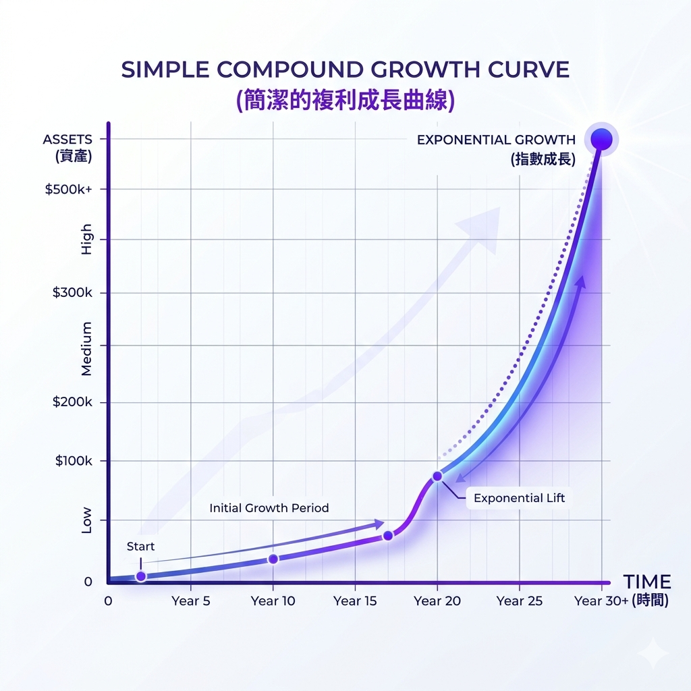
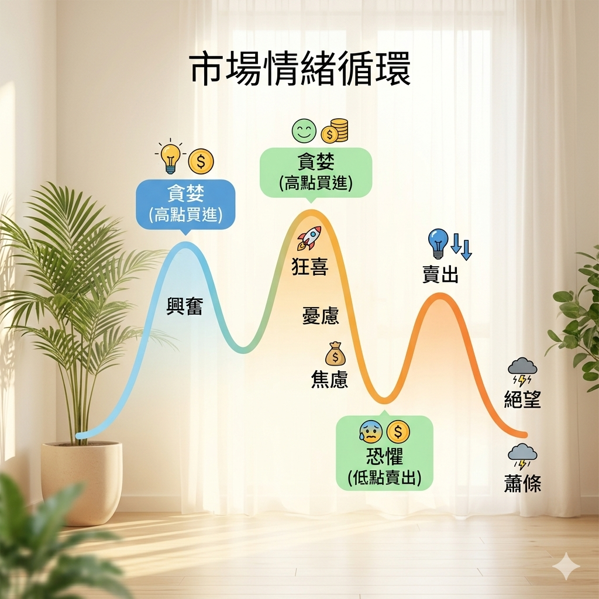

上一篇我們談了資產配置與風險管理，把投資的「地基」打好了。這一篇要談一個更難、卻更關鍵的東西——心態。
很多人以為投資輸贏靠的是選股功力或技術分析。但真正在市場裡待久了你會發現：大部分人不是輸在不懂，而是輸在管不住自己。看到大漲怕錯過、看到大跌怕賠光，追高殺低，一來一回就把錢賠掉了。這篇就來談，怎麼建立一個能讓你「活得久」的投資心態。
長期 vs 短期：時間是你的朋友還是敵人
投資有兩種截然不同的玩法：
- 長期投資：買進好資產，長時間持有，讓它隨著經濟與企業成長。時間站在你這邊。
- 短線交易：頻繁買賣，賺價差。看似刺激，但要不斷猜對進出點，難度極高、交易成本也高。
對多數上班族、非專業投資人來說，長期投資是勝率高得多的選擇。原因很簡單：短線要贏，你得比市場上無數專業機構、演算法更快更準，這幾乎不可能；但長期投資只要押對「經濟長期會成長」這個大方向，時間就會幫你把波動熨平。
股神巴菲特有句話的意思是：如果你不打算持有一檔股票十年，就不要考慮持有它十分鐘。這說的就是長期思維。
複利：為什麼「時間」這麼值錢
長期投資最強的武器，是複利——利滾利、錢滾錢。
複利的威力在於它前慢後快。剛開始你會覺得成長很慢、不痛不癢，但只要撐得夠久，後段會出現驚人的加速。

上面這條曲線就是複利的樣子：前面平緩，後面陡升。這也解釋了為什麼越早開始越好——不是因為你早開始能多投幾年，而是因為複利最猛的那段在後面，你得先熬過前面平緩期才等得到。
短線交易最大的代價，就是打斷複利。頻繁進出、每次都要抽稅和手續費，還常常在錯的時間點出場，等於一直把複利的雪球推倒重來。
耐心 vs 貪婪：你最大的對手是自己
如果說複利是最強的朋友，那情緒就是最大的敵人。市場裡有兩種情緒最會害人：
- 貪婪：看到別人賺、看到大漲，怕錯過（FOMO），於是在高點追進。
- 恐懼：看到大跌、帳面虧損，怕賠更多，於是在低點恐慌賣出。
問題是，這兩個情緒剛好會讓你做出「高買低賣」——跟賺錢完全相反的行為。

看懂這張圖你就明白：多數人賠錢不是因為選錯標的，而是因為在情緒最高漲時進場、最恐慌時離場。而真正的高手，往往是反過來的——在別人貪婪時謹慎，在別人恐懼時看見機會。
怎麼練出好心態
心態不是天生的，是可以刻意練習的。幾個實用的做法：
- 先想好規則，再進場：事先決定「什麼情況買、什麼情況賣、能承受多少虧損」，用紀律取代當下的情緒。
- 少看盤：長期投資者天天盯盤只會放大焦慮。看得越勤，越容易被短期波動牽著走。
- 定期定額：固定時間投入固定金額，自動化地「跌時買多、漲時買少」，直接繞過擇時的心理壓力。
- 記錄你的決策與情緒：把每次買賣的理由和當下心情寫下來，事後回看，你會更認識自己的行為模式。
- 接受波動是常態：市場本來就會上下起伏，虧損的帳面數字不代表真的賠了——除非你在低點賣出。
投資是一場跟自己的修煉。技術與知識固然重要，但決定你能不能長期留在場上、把複利吃滿的，往往是那份「不被情緒帶著跑」的耐心。
小結
- 長期 > 短期：對多數人來說，長期持有好資產的勝率遠高於短線猜漲跌。
- 複利需要時間：越早開始、抱得越久，後段的加速越驚人。
- 管好情緒：貪婪讓你追高、恐懼讓你殺低，紀律與少看盤是解方。
到這裡，「入門篇」的心法就告一段落了。地基（配置與風險）、動線（記帳與存錢）、心態（耐心與紀律）都齊了。接下來的「進階篇」，我們要開始認識各種實際的投資工具——股票、ETF、基金、債券，看看它們各自是什麼、怎麼用。
系列導覽
- 📚 回到 投資理財修煉 全系列目錄
- ⬅️ 上一篇：理財基本概念：資產配置與風險管理
- ➡️ 下一篇：認識投資工具：股票、ETF、基金、債券全景
本文為個人學習記錄與知識整理，非投資建議。投資有風險，請依自身情況獨立判斷 🐾